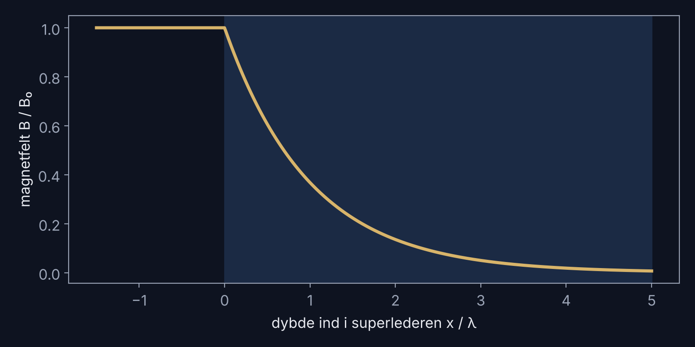
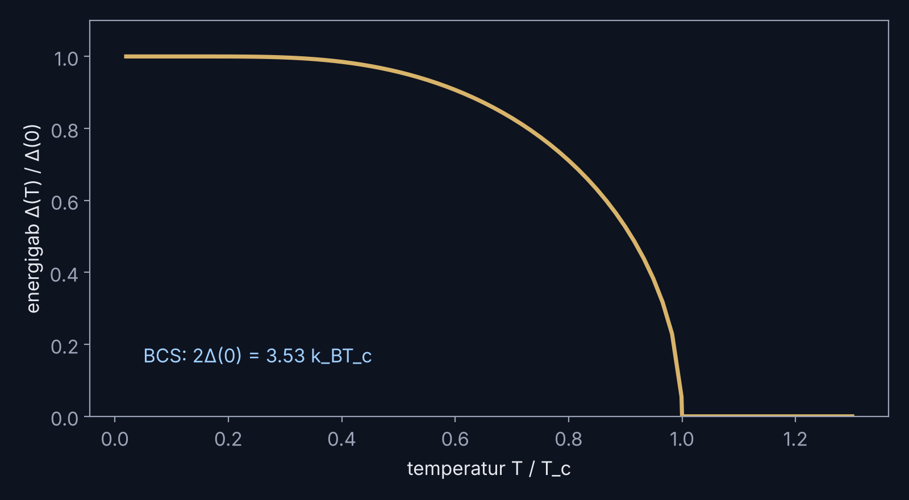
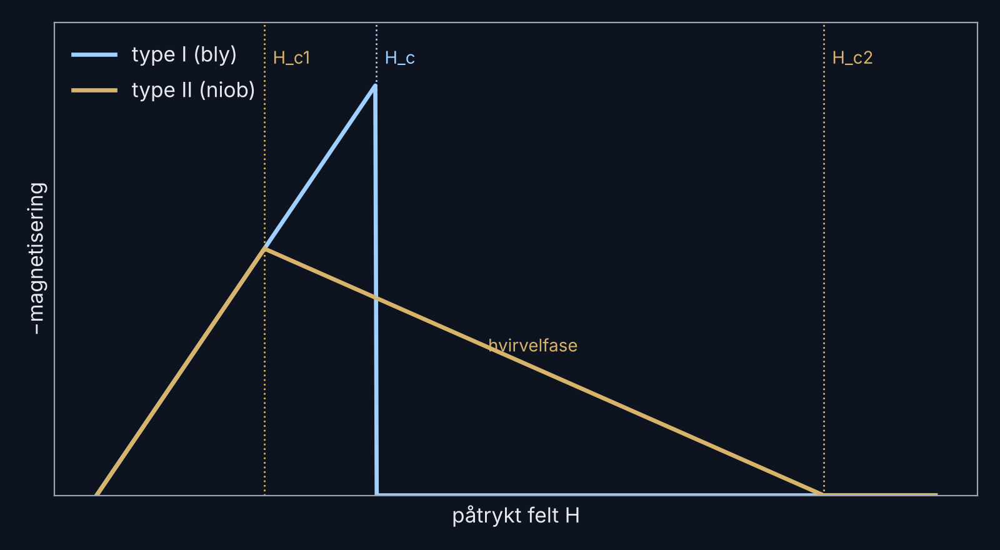
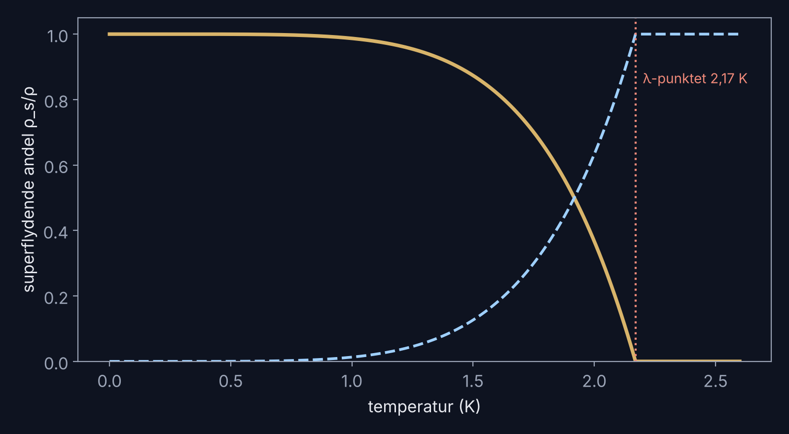

Den makroskopiske bølge
Superledning og superfluiditet ser forskellige ud – den ene handler om elektrisk strøm i metaller, den anden om helium, der flyder uden gnidning – men de bygger på samme idé. Ved lave temperaturer samles et makroskopisk antal partikler i én og samme kvantetilstand, beskrevet af én kompleks bølgefunktion for hele stykket stof:
Her er $n_s$ tætheden af de »kondenserede« partikler og $\theta$ en fase, der er den samme over hele prøven. Strømmen af partikler bestemmes af, hvordan fasen ændrer sig fra sted til sted:
For at stoppe strømmen må fasen ændres over hele prøven på én gang, og det kan en enkelt urenhed eller et enkelt sammenstød ikke. Derfor er strømmen stabil. I superlederen er partiklerne Cooper-par af elektroner med ladningen $-2e$ og massen $m^* = 2m_e$. I helium-4 er de heliumatomer. Resten af siden handler om de målbare følger af denne ene bølgefunktion.
London-ligningen og indtrængningsdybden
En superleder er mere end en perfekt leder. En perfekt leder ville fastholde det magnetfelt, der var i den, da den blev kold. En superleder skubber feltet ud (Meissner-effekten). Brødrene Fritz og Heinz London forklarede det i 1935 med et enkelt argument. Elektronerne i den superledende komponent accelereres frit af et elektrisk felt:
Tager man rotationen og bruger Faradays lov, $\nabla\times\vec E = -\partial\vec B/\partial t$, og Ampères lov, $\nabla\times\vec B = \mu_0\vec J$, får man en ligning for $\partial\vec B/\partial t$. Londons skridt var at antage, at den gælder for selve feltet og ikke kun for dets ændring:
Løsningen uden for en plan overflade er $B(x) = B_0 e^{-x/\lambda}$: feltet dør eksponentielt ud over indtrængningsdybden $\lambda$. Med $n_s \approx 10^{28}\ \mathrm{m^{-3}}$ bliver

Londons ligning siger noget dybere, som Fritz London selv indså: den følger af, at bølgefunktionen er »stiv« og ikke ændrer sig, når der tændes for et magnetfelt. Det var det første forslag om, at superledning er et kvantefænomen i makroskopisk skala.
Isotopeffekten: gitteret er med
I 1950 målte to grupper uafhængigt af hinanden overgangstemperaturen for forskellige isotoper af kviksølv. Resultatet var
hvor $M$ er atomkernernes masse. Tungere isotoper bliver superledende ved lavere temperatur. Elektronerne alene ved intet om kernernes masse, så gitterets svingninger – fononerne – måtte være med. En harmonisk oscillators frekvens er $\omega \propto \sqrt{k/M}$, og isotopeffekten viser, at energiskalaen for superledningen er fononernes energi $\hbar\omega_D$. Herbert Fröhlich havde samme år foreslået, at elektroner kan tiltrække hinanden ved at udveksle fononer. Den første elektron trækker de positive ioner lidt sammen; når den er væk, er der et øjeblik et overskud af positiv ladning, som trækker den næste elektron til. Ionerne er langsomme, så tiltrækningen virker forsinket – og derfor kan den overvinde den direkte Coulomb-frastødning.
BCS-gabet
Bardeen, Cooper og Schrieffer viste i 1957, at selv en svag tiltrækning får elektronerne nær Fermi-fladen til at danne par med modsat impuls og modsat spin. Parrene overlapper voldsomt – inden for ét par sidder der millioner af andre par – og de beskrives af én fælles bølgefunktion. Det koster energien $2\Delta$ at bryde et par. BCS-teorien giver
hvor $N(0)$ er tætheden af elektrontilstande ved Fermi-energien og $V$ styrken af den fononformidlede tiltrækning. Eksponentialfunktionen forklarer, hvorfor $T_c$ er så lav: selv med $N(0)V = 0{,}3$ er faktoren $e^{-3{,}3} \approx 0{,}04$, så $T_c$ bliver nogle procent af Debye-temperaturen, typisk 1–20 K. Gabet aftager med temperaturen og forsvinder ved $T_c$:

Gabet kan måles direkte. For niob ($T_c = 9{,}2$ K) er $2\Delta \approx 3{,}53\cdot k_B\cdot 9{,}2\ \mathrm{K} \approx 2{,}8$ meV. Fotoner med en frekvens over $2\Delta/h \approx 0{,}68$ THz kan bryde parrene, og derunder er superlederen gennemsigtig for strålingen – det blev målt i det fjerne infrarøde i 1956–57. Gabet kan også ses, når elektroner tunnelerer gennem en tynd isolator ind i superlederen: under spændingen $\Delta/e$ løber der næsten ingen strøm (Ivar Giaever 1960).
Et Cooper-pars udstrækning, kohærenslængden, er
omkring 1,6 µm i aluminium, men kun få nanometer i højtemperatur-superledere. Forholdet mellem $\lambda$ og $\xi$ afgør, hvordan superlederen opfører sig i et magnetfelt.
Type I og type II
Ved grænsen mellem en normal og en superledende zone koster det energi at få bølgefunktionen til at vokse fra nul (over længden $\xi$), men man vinder energi ved, at feltet kan trænge lidt ind (over længden $\lambda$). Ginzburg og Landau viste i 1950, at det hele afhænger af forholdet
For $\kappa < 1/\sqrt2$ er grænsefladen dyr, og superlederen skubber feltet helt ud, indtil den ved det kritiske felt $H_c$ pludselig bliver normal: type I (de fleste rene metaller som bly og tin). For $\kappa > 1/\sqrt2$ kan det betale sig at lade feltet trænge ind i tynde hvirvellinjer: type II. Mellem $H_{c1}$ og $H_{c2}$ er prøven fyldt med hvirvler, og først ved
forsvinder superledningen. Fordi $\xi$ kan være meget lille, kan $\mu_0 H_{c2}$ blive over 20 tesla i Nb₃Sn og over 100 tesla i kobberoxiderne. Det er grunden til, at MR-skannere og acceleratormagneter bygges af type II-superledere.

Fluxkvanter: beviset for parrene
Følg bølgefunktionen én gang rundt om en superledende ring. Den skal ende med samme værdi, som den startede med, så fasen må ændre sig med et helt multiplum af $2\pi$. Inde i ringen er strømmen nul, og regner man fasen sammen med vektorpotentialet $\vec A$, giver betingelsen, at den magnetiske flux gennem ringen er kvantiseret:
Fritz London forudsagde fluxkvantet med $q = e$. I 1961 målte to grupper (Deaver og Fairbank i Stanford, Doll og Näbauer i München) det i små tin- og blycylindre og fandt
– halvdelen af Londons værdi. Faktoren 2 er det direkte bevis for, at ladningsbærerne er par af elektroner. Hver hvirvel i en type II-superleder bærer netop ét fluxkvant.
Josephson-ligningerne
Adskilles to superledere af en isolator på et par nanometer, overlapper deres bølgefunktioner svagt. Brian Josephson viste i 1962, at der kan løbe en strøm af Cooper-par, der afhænger af faseforskellen $\varphi = \theta_2 - \theta_1$, og at en spænding får fasen til at løbe:
Uden spænding kan en jævnstrøm op til $I_c$ løbe uden spændingsfald. Med en jævnspænding $V$ svinger strømmen med frekvensen $f = 2eV/h = 483{,}6$ MHz pr. µV. Bestråles kontakten med mikrobølger med frekvensen $f$, opstår der spændingstrin ved præcis $V_n = nhf/2e$ – Shapiro-trin. Fordi kun naturkonstanter indgår, bruges en kæde af tusindvis af Josephson-kontakter i dag som verdens spændingsstandard.
I en SQUID med to kontakter i en ring interfererer de to strømme, og den største superstrøm varierer med fluxen gennem ringen som
Én periode svarer til ét fluxkvant. En ring på 1 mm² registrerer altså en feltændring på $\Phi_0/A \approx 2\cdot10^{-9}$ T pr. periode, og med elektronik, der kan dele perioden i en million dele, når man ned under $10^{-14}$ T – nok til at måle hjernens magnetfelt.
Helium-4: et Bose–Einstein-kondensat i en væske
Helium bliver ved 4,2 K flydende og forbliver flydende helt ned til det absolutte nulpunkt ved normalt tryk – atomerne er så lette, og bindingen mellem dem så svag, at nulpunktsbevægelsen forhindrer dem i at fryse. Ved 2,17 K, λ-punktet, skifter væsken karakter. Varmefylden har en spids, der ligner det græske bogstav λ, væsken holder op med at koge (den leder varme så godt, at der ikke dannes bobler), og den flyder gennem kapillarer så fine, at ingen almindelig væske kan komme igennem.
Fritz London foreslog i 1938, at overgangen er en Bose–Einstein-kondensation. For en ideal gas af bosoner med tætheden $n$ sker kondensationen ved
Med heliums tæthed, $n = 145\ \mathrm{kg/m^3} / 6{,}65\cdot10^{-27}\ \mathrm{kg} = 2{,}18\cdot10^{28}\ \mathrm{m^{-3}}$, giver formlen 3,1 K – tæt på 2,17 K, selvom heliumatomerne langtfra er en ideal gas. Neutronspredning har vist, at kun omkring 8 % af atomerne sidder i den laveste impulstilstand ved $T = 0$, fordi vekselvirkningerne skubber resten ud. Alligevel er hele væsken superflydende.

Tovæskemodellen (Tisza og Landau) forklarer de mærkelige forsøg. Opvarmer man helium bag en porøs prop, strømmer den superflydende del mod varmen for at udligne koncentrationen, og trykket kan få en fontæne til at sprøjte op – springvandseffekten. En tynd hinde af superflydende helium kravler op ad beholderens væg og drypper ned fra bunden udvendigt. Og de to komponenter kan svinge i modfase: »anden lyd« er en temperaturbølge med en fart på omkring 20 m/s.
Kvantiserede hvirvler
Drejer man en spand med superflydende helium, burde væsken efter Landaus teori blive stående, fordi strømningen $\vec v_s = (\hbar/m)\nabla\theta$ er rotationsfri. Men i forsøg roterer væsken med, ligesom almindeligt vand. Lars Onsager og Richard Feynman forklarede omkring 1950, at væsken gennembores af tynde hvirvellinjer. Rundt om hver linje ændrer fasen sig med $2\pi$, og cirkulationen er kvantiseret:
Joe Vinen målte kvantet i 1961 med en vibrerende tråd i roterende helium. Antallet af hvirvler pr. areal i en spand, der roterer med vinkelhastigheden $\Omega$, er $2\Omega m_4/h$ – omkring 13 000 pr. cm² ved én omdrejning i sekundet. Hvirvlerne i superflydende helium er altså søskende til fluxkvanterne i en type II-superleder: begge er steder, hvor bølgefunktionen er nul, og fasen drejer én omgang.
Helium-3 og Leggett
Helium-3 har et ulige antal nukleoner og er en fermion. Den kan ikke kondensere, men atomerne kan danne par som elektronerne i en superleder. Det skete ved 2,6 mK (ved smeltetrykket), da Osheroff, Lee og Richardson i 1972 opdagede to nye faser, A og B. Parrene i helium-3 er langt mere komplicerede end Cooper-par i metaller: deres spin er 1, og de har impulsmoment 1 (p-bølgepar). Ordensparameteren har derfor mange komponenter, og væsken har en indre struktur, der minder om en flydende krystal.
Den kernemagnetiske resonans i A-fasen lå ved en frekvens, der var helt forkert ifølge teorien. Anthony Leggett viste i Sussex, at den svage magnetiske dipolkraft mellem kernespinnene – normalt fuldstændig ubetydelig – får en enorm virkning, fordi alle parrene er låst i samme orientering. Det svarer til, at et helt kompas reagerer, hvor en enkelt magnetnål ikke ville. Han fik Nobelprisen i 2003. Superflydende helium-3 er siden brugt som laboratorium for kosmologi: hvirvler og »teksturer« i væsken ligner de defekter, der kan være opstået i det tidlige univers.
Bose–Einstein-kondensat i atomgasser
I helium vekselvirker atomerne stærkt. Et rent Bose–Einstein-kondensat i en fortyndet gas blev først lavet i 1995 af Eric Cornell og Carl Wieman med rubidium-87 ved 170 nanokelvin og kort efter af Wolfgang Ketterle med natrium. Atomerne fanges med laserlys og magnetfelter og afkøles ved fordampning: de varmeste atomer får lov at slippe ud, og resten falder til ro. Ved gassens lave tæthed, omkring $10^{20}\ \mathrm{m^{-3}}$, giver formlen for $T_{\mathrm{BEC}}$ netop nogle hundrede nanokelvin. De tre fik Nobelprisen i 2001.
Ketterles gruppe lod i 1997 to kondensater flyde ind i hinanden og så interferensstriber – direkte bevis for, at et kondensat er én bølge med en veldefineret fase. I 2004 lykkedes det at få fermioner (kalium-40) til at danne par og kondensere, og ved at ændre vekselvirkningen med et magnetfelt kan man gå kontinuert fra løst bundne Cooper-par (BCS) til tæt bundne molekyler (BEC). Dermed hænger superledning, superflydende helium-3 og Bose–Einstein-kondensation sammen i én teori.
Opgaver
Svar: $\lambda = \sqrt{m/(\mu_0 n_s e^2)} \approx 43$ nm. (Målt: ca. 37 nm.)
Svar: $\Delta B = \Phi_0/A = 2{,}07\cdot10^{-15}/5\cdot10^{-7} \approx 4\cdot10^{-9}$ T – omkring en tolvtusindedel af Jordens felt pr. periode.
Svar: $n = 2{,}18\cdot10^{28}\ \mathrm{m^{-3}}$ giver $T_{\mathrm{BEC}} \approx 3{,}1$ K. Den målte værdi er 2,17 K, fordi atomerne vekselvirker stærkt; en del af dem kan ikke komme i grundtilstanden.
Svar: $2\Delta = 3{,}53\,k_BT_c \approx 0{,}36$ meV, $f = 2\Delta/h \approx 87$ GHz.
Læs mere
- Michael Tinkham: Introduction to Superconductivity (2. udg., Dover 2004)
- A.J. Leggett: Quantum Liquids (Oxford 2006)
- D.R. Tilley og J. Tilley: Superfluidity and Superconductivity (3. udg., IOP 1990)
- Richard Feynman: The Feynman Lectures on Physics, bind III, kapitel 21 »The Schrödinger Equation in a Classical Context: A Seminar on Superconductivity«
- Videre på mhgfysik.dk: Superledning og superfluiditet, Statistisk mekanik, Anthony Leggett